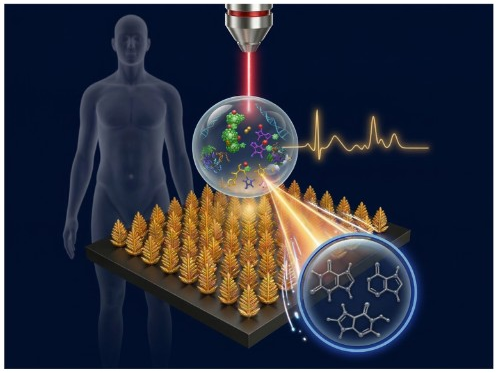
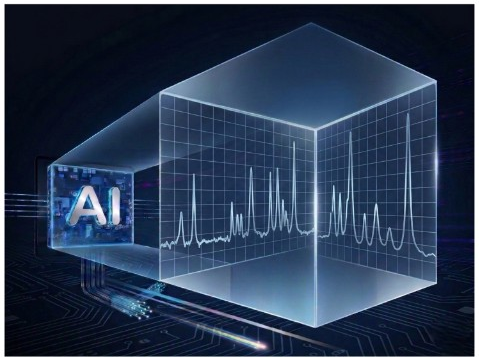
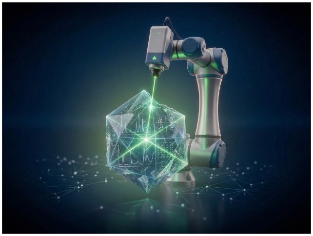

01 / 03
Spectroscopy & Sensing

자세히 보기 →
 분광분석연구실
Analytical Spectroscopy Laboratory
분광분석연구실
Analytical Spectroscopy Laboratory
Hanyang University · Department of Chemistry
ASL develops quantitative and interpretable analytical workflows for complex chemical systems. We combine spectroscopy, signal preprocessing, and chemometrics to solve translational problems in bio, materials, and environmental applications.
Laboratory Scope
We execute end-to-end analytical pipelines from instrument setup and spectral acquisition to model validation. Our objective is robust, reproducible quantitation under real-world measurement variability.
Research Focus
01 / 03

자세히 보기 →
02 / 03

자세히 보기 →
03 / 03

자세히 보기 →
Publications
Professor

Gallery